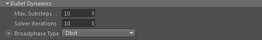
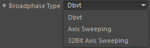

Bullet Dynamics

Max. Substeps
This defines how many substeps the Bullet engine takes. These substeps are taken per each
Effex framework substep.
Solver iterations
The bullet solver iterations defines the quality of resolving contacts between objects while higher values
mean better quality and lower iterations mean less accuracy.
Values between 4 - 20 are considered useful. The default of 10 iterations is a good trade-off between speed and accuracy.
Broadphase Type

The broadphase type determines how the Bullet engine tries to quickly find
colliding pairs of objects (before exact collisions are calculated between these found collision objects).
Dbvt
This is a dynamic AABB tree.
It handles many objects that are in motion very well and object addition and removal is faster than the Axis Sweeping Broadphase types.
(32Bit) Axis Sweeping
This broadphase has the best performance for typical dynamics worlds where most objects have little or no motion.